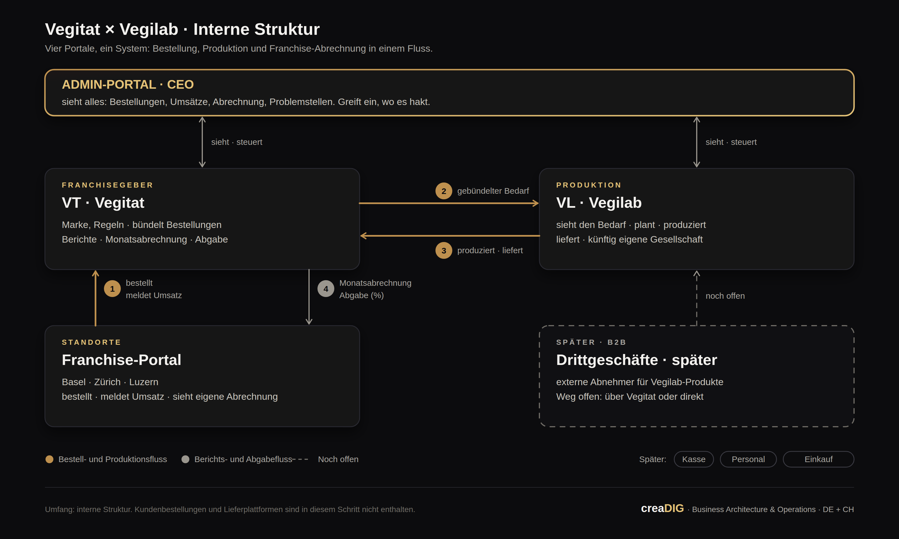

Angebot · Interne Struktur und digitaler Vertrieb
Ein System, das Bestellung, Produktion und Franchise-Abrechnung verbindet. Aufgebaut, betrieben und geführt aus einer Hand.
Vertraulich. Dieses Angebot ist ausschliesslich für die Vegitat GmbH bestimmt. Konzept, Struktur und Inhalte dürfen ohne schriftliche Zustimmung von creaDIG nicht an Dritte weitergegeben oder für Dritte verwendet werden.
Özet · Türkçe
Resmi teklif Almanca bölümdür; rakamlar ve şartlar orada bağlayıcıdır.
1
Ich kenne Vegitat von innen. Zwei meiner Brüder arbeiten im Unternehmen, und ich höre seit Jahren, wo es täglich hakt: Bestellungen per Nachricht, Listen, die jeder sieht, Abrechnungen von Hand.
Ich kenne Mutalip Karahan, ich sehe, wie sein Sohn im Betrieb mitzieht, und ich sehe ein Familienunternehmen, das wachsen will. Genau solche Strukturen baue ich mit creaDIG: verstehen, bauen, betreiben.
Ich will das nicht als Projekt abliefern und gehen. Ich will es aufbauen, betreiben und langfristig verantworten. Deshalb dieses Angebot.
Keine Beteiligung an Vegitat, keine Vollmachten, keine Zugriffe ausserhalb des Systems. Vegitat bleibt Vegitat.
Mutalip Karahan bleibt der Entscheider. Das System gibt der Geschäftsführung mehr Sicht und mehr Kontrolle, nicht weniger.
Bezahlt wird je Phase, nach Abnahme. Nach jeder Phase kann Vegitat anhalten. Die Daten gehören immer Vegitat.
Kurz: Ich arbeite für Vegitat, nicht an Vegitat.
2
Notion und WhatsApp haben Vegitat bis hierher getragen. Für drei Standorte reicht das. Für zehn nicht.
| Was der Betrieb braucht | Notion + WhatsApp | Portal |
|---|---|---|
| Bestellung mit Status und Historie je Standort | Liste ohne Status, Nachricht ohne Verlauf | ✓ |
| Bedarf für die Produktion automatisch gebündelt | von Hand | ✓ |
| Jeder Standort sieht nur das Eigene | jeder sieht alles | ✓ |
| Lieferstatus zurück an den Standort | – | ✓ |
| Umsatzmeldung und Monatsabrechnung nach Regeln | von Hand | ✓ |
| Gesamtbild für die Geschäftsführung, ohne nachzufragen | – | ✓ |
| Neuer Standort in Tagen angebunden | neue Listen, neue Gruppen | ✓ |
| Wissen bleibt im System, nicht in Personen | – | ✓ |
Notizen, Dokumente, Listen. Als Wissensablage bleibt es nützlich, etwa für Rezepte, Standards und Richtlinien.
Abläufe mit Status, Rechte je Standort, Regeln für die Abrechnung, Zahlen für die Produktion. Das ist ein Betriebssystem, kein Notizbuch.
Jeder neue Standort auf Listen und Nachrichten vergrössert die Unordnung. Jeder neue Standort auf dem Portal bringt vom ersten Tag an Ordnung.
3

Die detaillierte Systembeschreibung, also Datenflüsse, Regeln, Bildschirme und Schnittstellen, ist das Ergebnis von Phase 1.
4
Jede Rolle hat ihren eigenen Zugang, vom Handy oder Laptop. Jeder sieht genau das, was er für seine Arbeit braucht.
Sieht alles: Bestellungen, Produktion, Umsätze, Abrechnungen, Standorte, Problemstellen. Greift ein und gibt frei.
Bündelt Bestellungen, führt Regeln und Preise, betreut Standorte, rechnet monatlich ab, bindet neue Standorte an.
Sieht den gebündelten Bedarf, plant und produziert, meldet Lieferung und Status. Später: eigene Verrechnung mit Vegitat.
Bestellt in Minuten, sieht Lieferstatus, meldet Umsatz, sieht die eigene Abrechnung. Nur die eigenen Daten.
bestellt fürs Wochenende vom Handy. Zwei Minuten.
sieht Basel, Zürich, Luzern gebündelt. Bedarf steht.
plant die Produktion nach Bedarf, meldet Liefertag.
Umsätze gemeldet, Abrechnung berechnet, Geschäftsführung gibt frei.
Menüpunkte und Bildschirme sind Zielbild; die genaue Ausgestaltung entsteht in Phase 1 mit den Nutzern.
5
creaDIG baut, betreibt, pflegt und entwickelt das System. Vegitat nutzt es. So bleibt es lebendig, ohne dass Vegitat Technik im Haus braucht.
| Gegenstand | Eigentum | Was das für Vegitat heisst |
|---|---|---|
| Betriebs-, Umsatz-, Bestell- und Personendaten | Vegitat GmbH | Jederzeit exportierbar in offenem Format. Bei Ende vollständige Übergabe. |
| Ergebnisse je Phase: Prozesse, Regeln, Dokumentation | Vegitat GmbH | Mit Bezahlung der Phase bei Vegitat, unabhängig vom System nutzbar. |
| Das System, die Plattform | creaDIG | Unbegrenztes Nutzungsrecht während der Zusammenarbeit. Übernahmeoption, siehe Sicherheit. |
| Zugänge, Domains, Hosting-Konten | Vegitat GmbH | Laufen von Beginn an auf Vegitat; Kontrolle liegt bei der Geschäftsführung. |
Daten und Ergebnisse bei Vegitat, Betrieb und Pflege bei creaDIG. Das ist die Arbeitsteilung, die ein System am Leben hält.
6
Die interne Struktur ist der Anfang. Danach übernimmt dieselbe Stelle alles, was digital verkauft, anbindet und wächst.
Bestellung, Bedarf, Produktion, Lieferstatus, Umsatz, Monatsabrechnung, Admin-Portal. WhatsApp wird abgelöst.
Neue Standorte in Tagen. Drittgeschäft-Kanal für Vegilab-Produkte. Vegilab als eigene Einheit vorbereitet.
Online-Bestellung und Lieferplattformen gebündelt. Kasse, Personal, Einkauf als Module. Berichte für Entscheidungen.
Das System läuft, wird gepflegt und weiterentwickelt. Nutzer werden geschult, neue Standorte angebunden.
Wöchentlich 30 Minuten mit der Geschäftsführung, monatlich ein Bericht: was läuft, was hakt, was als Nächstes kommt.
Drittgeschäft und Online-Kanäle werden aufgebaut und betreut. Hier greift die Erfolgsbeteiligung.
Nicht sechs Einzellösungen. Ein Kern, der mit dem Betrieb wächst.
7
Vor Ort mit allen Beteiligten: wer bestellt was, wann, bei wem. Ergebnis: das abgestimmte Systemdesign und der verbindliche Plan.
Franchise-Portal bestellt, Vegitat bündelt, Vegilab sieht den Bedarf und meldet Lieferung. WhatsApp wird abgelöst.
Umsatz je Standort, Abgabe in Prozent, Monatsabrechnung automatisch. Admin-Portal mit Kennzahlen und Problemstellen.
| Zeitraum | Phase | Abnahme |
|---|---|---|
| KW 42 bis 43 | 1 · Strukturaufnahme | Systemdesign von der Geschäftsführung freigegeben |
| KW 44 bis 49 | 2 · Digitale Bestellung | Alle Standorte bestellen zwei Wochen lang nur über das Portal |
| KW 50 bis KW 7/2027 | 3 · Abrechnung und Admin | Erste Monatsabrechnung aus dem System, bestätigt; Feiertage berücksichtigt |
| ab März 2027 | laufend | Betrieb, neue Standorte, Drittgeschäft, weitere Module |
Phase 1: zwei bis drei Tage vor Ort. Phase 2 und 3: ein bis zwei Tage pro Monat. Laufend: rund zwei Tage pro Monat, Steuerung wöchentlich remote.
Innerhalb von 14 Tagen nach Annahme. Vorschlag: 12. bis 23. Oktober 2026. Die Dauer der Phasen 2 und 3 wird in Phase 1 präzisiert.
8
| Seite | Rolle | Beitrag |
|---|---|---|
| Vegitat GmbH | Mutalip Karahan, Entscheider | Wöchentlich 30 Minuten Steuerung. Zugang zu Team, Bestellhistorie, Franchise-Regeln. Zwei bis drei Tage vor Ort in Phase 1. Freigabe je Phase. |
| Standorte | Je Standort eine Kontaktperson | Strukturaufnahme, Testbestellungen, Rückmeldungen in der Einführung. |
| Vegilab | Produktionsverantwortliche Person | Produktionsablauf, Kapazitäten, Lieferwege; Test der Bedarfs- und Liefersicht. |
| creaDIG | Muhammed Emin Akyol, Leitung Digitaler Vertrieb & Struktur | Strukturaufnahme, Systemdesign, Aufbau, Einführung, Schulung, Betrieb, Weiterentwicklung, Verkaufskanäle, monatlicher Bericht. |
Die Abläufe sind bekannt, die Probleme auch. Keine Einarbeitung, kein Berater, der erst fragen muss, wie ein Döner-Standort funktioniert.
creaDIG baut und betreibt eigene Systeme, darunter ein Kassensystem für die Gastronomie in der Schweiz. Bauen und Betreiben aus einer Hand.
Eine Stelle für Struktur, Betrieb und Vertrieb. Wenn etwas hakt, gibt es eine Person, die es löst, und einen Bericht, der es zeigt.
Arbeitsrhythmus: wöchentlich 30 Minuten Steuerung, monatlich ein schriftlicher Bericht, nach jeder Phase eine Abnahme.
9
Vier Bausteine. Phase 1 ist ein Festpreis. Alles danach sind Richtwerte, die nach der Strukturaufnahme verbindlich werden.
Phase 1, Strukturaufnahme und Systemdesign: CHF 6'000, fest. Fällig bei Freigabe des Systemdesigns.
Phase 2 und 3 zusammen: Richtwert CHF 24'000 bis 30'000, je Phase 50 % bei Start, 50 % bei Abnahme. Verbindlich nach Phase 1.
CHF 1'500 pro Monat für bis zu fünf Standorte, je weiterer Standort CHF 150. Ab Go-live von Phase 2.
Enthält Hosting, Backups, Sicherheit, Updates, Support an Werktagen.
CHF 5'500 pro Monat, drei Tage pro Woche, ab Abschluss von Phase 3. Rolle: Leitung Digitaler Vertrieb & Struktur, als Mandat über creaDIG.
Unbefristet, Mindestlaufzeit 12 Monate, Kündigungsfrist 3 Monate. Enthält Steuerung, Weiterentwicklung, neue Standorte, Verkaufskanäle, Bericht.
3 % des Nettoumsatzes aus Drittgeschäft und Online-Verkauf, der über das System läuft. Ab Aktivierung des jeweiligen Kanals, monatlich abgerechnet.
Präzisierung schriftlich beim Start dieser Kanäle.
10
Richtwerte aus dem Schweizer Markt, zum Vergleich. Sie zeigen, was dieselbe Leistung anderswo kostet und was hier anders ist.
| Weg | Richtwert | Was fehlt |
|---|---|---|
| Agentur, Individualentwicklung | CHF 80'000 bis 150'000 Aufbau, dazu CHF 2'000 bis 4'000 pro Monat Wartung | Niemand im Betrieb, der es führt. Änderungen kosten je Ticket. |
| Freelancer, Senior | CHF 120 bis 180 pro Stunde, 40 bis 60 Tage: CHF 40'000 bis 85'000 | Kein Betrieb, keine Pflege, keine Verantwortung danach. |
| Festanstellung Digitalverantwortlicher | CHF 130'000 bis 165'000 pro Jahr inklusive Sozialabgaben | Baut das System nicht selbst; braucht zusätzlich Agentur oder Software. |
| Standardsoftware, Lizenzen | CHF 200 bis 600 pro Monat je Standort | Deckt Produktion und Franchise-Abrechnung meist nicht ab, kaum anpassbar. |
| Dieses Angebot, Jahr 1 | rund CHF 90'000: Aufbau, Betrieb und Leitung zusammen | Ein System, ein Betrieb, eine verantwortliche Person. |
creaDIG baut auf einer eigenen Plattformbasis, nicht bei null. Das senkt die Einrichtung deutlich.
Keine Projektleiter, Account-Manager und Zwischenstufen. Eine Person, die versteht, baut und betreibt.
Das Ziel ist die langfristige Verantwortung im Betrieb, nicht der Gewinn am Projekt.
Ein Teil der Vergütung kommt erst, wenn das System Umsatz bringt. Das Risiko wird geteilt.
Richtwerte beruhen auf Markterfahrung, nicht auf eingeholten Offerten. Sie dienen der Einordnung.
11
Acht Zusagen, die im Vertrag stehen.
Alle Betriebs-, Umsatz- und Personendaten. Export jederzeit in offenem Format, ohne Begründung.
Prozesse, Regeln und Dokumentation jeder bezahlten Phase gehören Vegitat, auch ohne das System.
Vegitat entscheidet nach jeder Abnahme, ob es weitergeht. Keine Vorauszahlung über die laufende Phase hinaus.
Drei Monate Übergangsbetrieb nach Kündigung, vollständige Übergabe von Daten und Dokumentation.
Vegitat kann das System übernehmen, zu einem vorab festgelegten Preis. Richtwert: zwölf Monatsgebühren Nutzung und Pflege.
Die Nutzungsgebühr wächst nur mit den Standorten. Keine versteckten Positionen.
Keine Beteiligung an Vegitat. Zugänge, Domains und Konten laufen auf Vegitat. Die Geschäftsführung behält die Kontrolle.
Beidseitig, auch nach dem Ende. Auf Wunsch vor Phase 1 als eigene Vereinbarung unterzeichnet.
Kurz gesagt: Vegitat kann jederzeit anhalten, verliert dabei keine Daten und keine Ergebnisse, und kann das System übernehmen, wenn es das will.
12
| Schritt | Was | Wann |
|---|---|---|
| 1 | Rückfragen zum Angebot, 30 Minuten, persönlich oder telefonisch | innerhalb einer Woche |
| 2 | Annahme von Phase 1 durch Unterschrift auf dieser Seite | bis 31. Oktober 2026 |
| 3 | Termin für die Strukturaufnahme vor Ort | 12. bis 23. Oktober 2026 |
| 4 | Verbindliches Angebot für Phase 2 und 3 auf Basis des Systemdesigns | Ende von Phase 1 |
Die Vegitat GmbH nimmt das Angebot A-2026-09-VEG-01 vom 24. September 2026 an und beauftragt Phase 1, Strukturaufnahme und Systemdesign, zum Festpreis von CHF 6'000. Die Phasen 2 und 3, Nutzung und Pflege sowie die Leitung werden nach Freigabe des Systemdesigns gemäss diesem Angebot beauftragt.
creaDIG · Business Architecture & Operations · Muhammed Emin Akyol · [Strasse Nr.] · [PLZ] Hannover · Deutschland · hallo@creadig.de · [Telefon] · [USt-IdNr.]